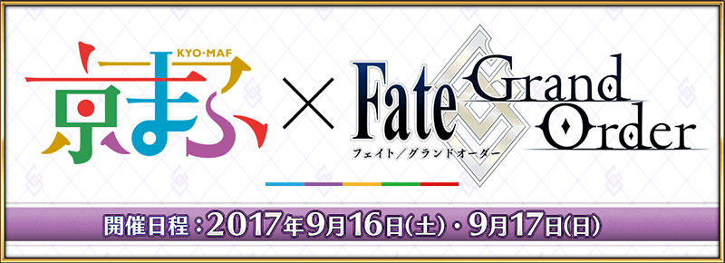

非常感謝您使用「Fate/Grand Order」。
在2017年9月16日(六)・9月17日(日)舉辦的
「京都國際漫畫・動畫展2017」(以下稱京漫展)『Fate/Grand Order』出展。
【9/17(日) 14:00追記】
◆京都國際漫畫・動畫展2017出展記念贈送聖晶石10個◆
為了記念京都國際漫畫・動畫展2017出展，贈送聖晶石10個。
【對象期間】
2017年9月18日(一) AM3:00～9月21日(四) AM2:59
【贈送對象】
上述期間遊玩「Fate/Grand Order」的玩家
【贈送內容】
・聖晶石10個
【領取條件】
2017年9月18日(一) AM3:00～9月21日(四) AM2:59的期間中，在初次進行登入的時間點，贈送至禮物箱。
※期間內未登入的情況無法領取。
※禮物只限領取1次。
◆Fate/Grand Order Epic of Remnant 第三章正式標題決定！◆
標題：
Fate/Grand Order Epic of Remnant 第三章
亞種特異點Ⅲ 屍山血河舞台 下總國
英靈劍豪七番勝負